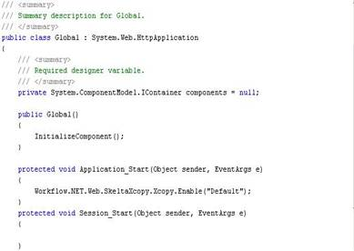

No
Enabling Xcopy Deployment
AVEVA Work Tasks enables Xcopy deployment of dlls. Xcopy enables direct replacement of dlls by ensuring that they are not locked by the processes. Xcopy deployment is not applicable to the Windows Services, Workflow.NET.dll, Workflow.NET.Communication.dll, and Custom dlls configured for getting connection string.
Complete the following steps to enable Xcopy deployment:
- Stop all the AVEVA Work Tasks Services
- Ensure that the custom application folders have been configured in the Repository Settings in the Central Configuration Site.
- Reference the "Workflow.NET.Web.SkeltaXcopy.dll" from "bin" folder of the AVEVA Work Tasks installation directory.
- Ensure that the file watcher has been configured for the application in the Repository Settings.
- Enable AVEVA Work Tasks Xcopy in the Application_Start method in the Global.asax.cs of the application.

- After configuring Xcopy, the dlls will not be locked by the processes and can be replaced directly.
- Restart all AVEVA Work Tasks Services.